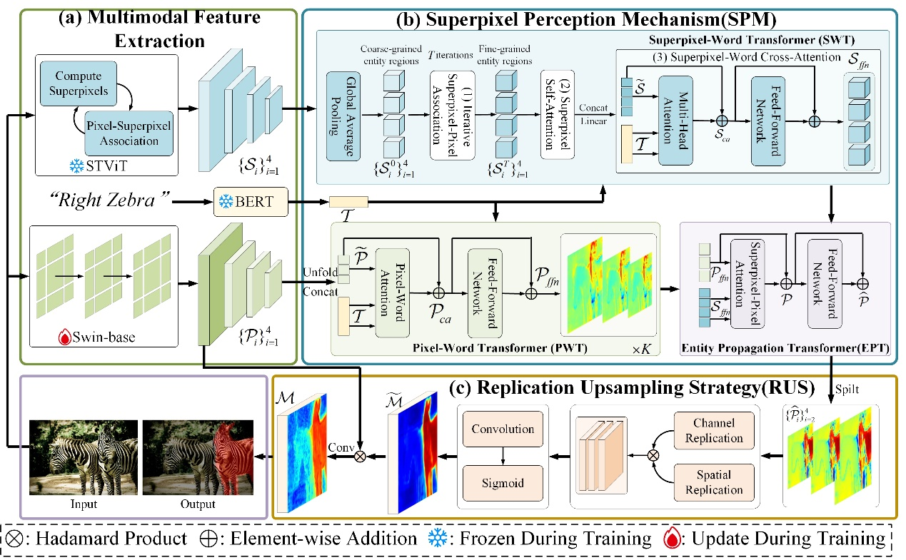
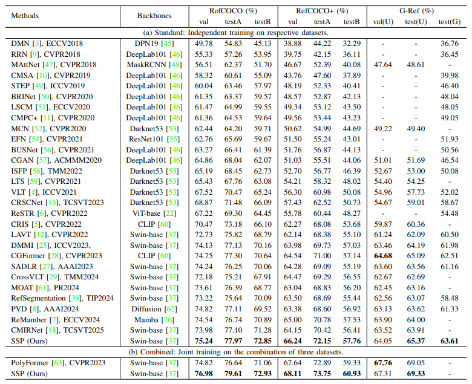
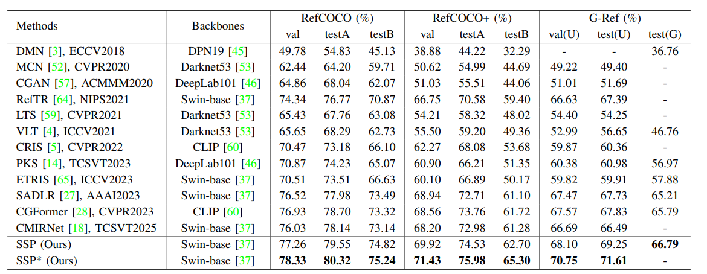
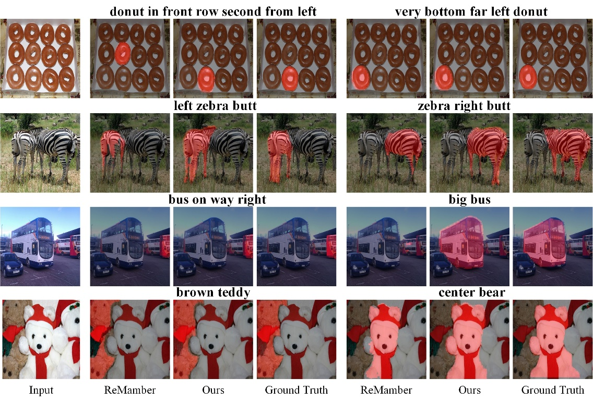

Structure-preserved Superpixel Perception for Referring Image Segmentation
Ran Chen, Taiyi Su, Shanshan Du, Hanli Wang
Overview:
Referring image segmentation aims to identify and segment objects in images based on linguistic expressions. Existing methods typically match individual pixels with linguistic words (pixel-word perception) and use interpolation upsampling for segmentation. However, these approaches encounter two limitations. First, as a meaningful word describes an entire entity while a pixel merely captures fragmented visual cues, the widely used pixel-word perception experiences semantic hierarchy misalignment, resulting in misjudgment of target entity. Second, the approximate estimation in the interpolation upsampling misleads region segmentation, struggles to preserve the target entity boundaries during feature reconstruction, and causes oversegmentation of non-target regions or undersegmentation of critical parts. To address these issues, a structure-preserved superpixel perception (SSP) framework is designed, which integrates a superpixel perception mechanism (SPM) to refine object identification and a replication upsampling strategy (RUS) to preserve appearance integrity. Specifically, SPM starts by utilizing superpixel clustering and language guidance to mine the knowledge of target object efficiently. Meanwhile, potential target regions are also extracted by SPM through traditional pixel-word associations. Then, SPM refines the recognition of target entity by establishing relationships between pixel-level representation and superpixel-level knowledge. Regarding RUS, it can directly replicate spatial and channel information for more precise feature reconstruction, serving as an alternative to interpolation upsampling. RUS consists of two complementary components: spatial replication and channel replication, which account for the assurance of target entity's structural integrity and preservation of fine-grained details, respectively. Extensive experiments on the benchmark RefCOCO, RefCOCO+ and G-Ref datasets demonstrate that the proposed SSP framework achieves superior performance while using fewer FLOPs compared to the state-of-the-art methods.
Method:
The overview of the proposed SSP is depicted in Fig. 1. SSP is accomplished by a Superpixel Perception Mechanism (SPM) and a Replication Upsampling Strategy (RUS). Specifically, SPM integrates three key modules: a Pixel-Word Transformer (PWT), a Superpixel-Word Transformer (SWT), and an Entity Propagation Transformer (EPT). The PWT identifies potential pixel-level referring entities based on the traditional PWPM. Concurrently, the SWT introduces superpixel features extracted from a pre-trained superpixel network and purifies them to mine the knowledge of the target entity in the cooperation of both linguistic information and superpixel clustering capabilities. This purification enables lightweight yet effective information excavation of the target entity, which can serve as prior knowledge for distinguishing pixel-level entities. Finally, the EPT establishes relationships between superpixel-level knowledge and pixel-level representation, propagating the purified superpixel knowledge to enhance the discrimination of pixel-level target entities. By doing so, SPM can refine object identification and guarantee precise segmentation of the target entity. Furthermore, a RUS is put forward to preserve structural details, which consists of two complementary components: a Spatial Replication (SR) and a Channel Replication (CR). SR selectively amplifies important spatial features through adaptive replication, effectively reconstructing the structure of the target entity while suppressing irrelevant regions. Meanwhile, CR reorganizes and enhances channel-wise features to preserve texture details, compensating for fine-grained information lost during spatial upsampling. This dual-path approach ensures that the upsampled features maintain both precise entity boundaries and rich visual details throughout the resolution enhancement process.

Fig. 1. Overview of the proposed SSP framework.
Result:
The comparison results on RefCOCO/+/g between SSP and the state-of-the-art referring image segmentation methods are shown in Table 1 and Table 2.
Table 1. Comparison with state-of-the-art models on three benchmark datasets of refcoco, refcoco+, and g-ref using oIoU as the metric.

Table 2. Comparison with state-of-the-art models on three benchmark datasets of refcoco, refcoco+, and g-ref using mIoU as the metric.

To validate the practical effectiveness of the proposed SSP, we present the predicted segmentation masks in Fig. 2. Compared to state-of-the-art models like ReMamber, SSP not only segments the target entity accurately but also demonstrates a deeper understanding of the different meanings conveyed by language expressions. For example, in the first row, ReMamber correctly segments the second expression but fails to properly interpret the first one. In contrast, SSP accurately understands the meanings of both expressions and successfully segments the corresponding entities.

Fig. 2. Visualization of the ground-truth mask and the segmentation mask generated by the ReMamber and our SSP. The target entities are masked in red.
Source Code:
Original illustration: image placeholderSSP1.0.zip
Citation:
Please cite the following paper if you find this work useful:
Ran Chen, Taiyi Su, Shanshan Du, Hanli Wang, Structure-preserved Superpixel Perception for Referring Image Segmentation, IEEE Transactions on Circuits and Systems for Video Technology, vol. 36, no. 7, pp. 9821-9834, Jul. 2026.